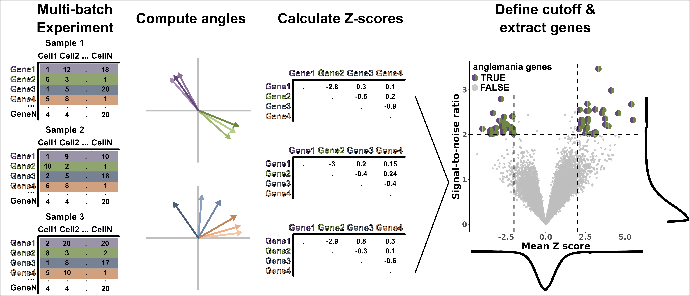

Overview
anglemania is a new approach to the integration of scRNA-seq (and, potentially, others sc-omics) from similar biological entities. The novelty, as well as the cornerstone, of the proposed approach, is to use the conservation of angles between gene pairs across an assembly of datasets to be integrated. anglemania extracts genes from gene pairs that exhibit invariant and biologically meaningful relationships across different experiments. Those genes can subsequently be used as the basis for integration algorithms such as Seurat CCA integration, SCVI and others. Checkout our website.
| Github | |
| Bioc Release |  |
Installation
You can install anglemania from Bioconductor using the following commands: once available on Bioconductor:
# Install BiocManager if you haven't already
if (!requireNamespace("BiocManager", quietly = TRUE))
install.packages("BiocManager")
# Install anglemania
BiocManager::install("anglemania")For the development version:
BiocManager::install("anglemania", version="devel")Documentation
Comprehensive documentation is available on our [anglemania website] Or visit the Bioconductor package page.